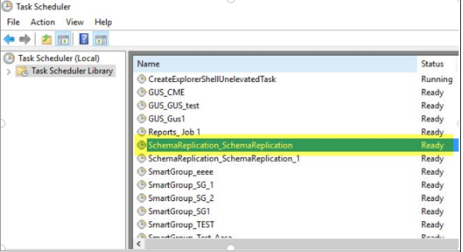
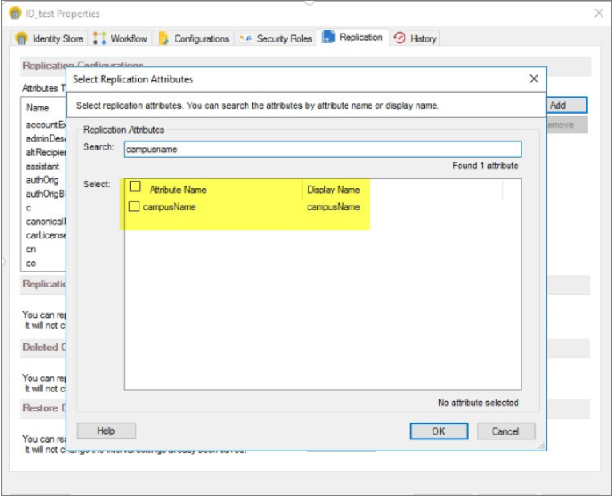
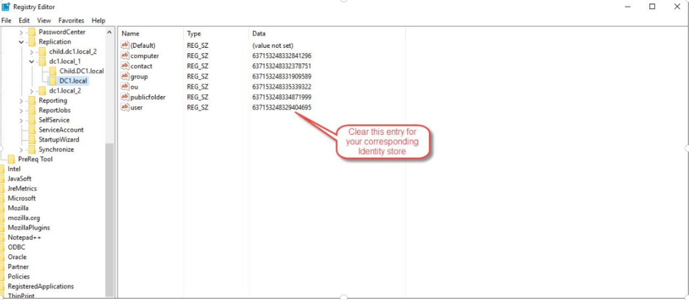

Applies To
Directory Manager 10
Overview
Netwrix Directory Manager (formerly GroupID) 10 allows you to replicate custom Active Directory (AD) attributes to the Elasticsearch repository. This article provides instructions for adding a custom attribute to the AD schema and configuring Directory Manager to include it in replication.
Instructions
- Create the custom attribute in the Active Directory schema. For example, to add campusName for users, define the attribute in the AD schema and assign it to user objects. Once completed, the attribute will appear in the attribute list for users in AD.
-
On the Directory Manager machine, open Task Scheduler and run the task named
Schema Replication.
 - After the Schema Replication task completes, navigate to the Directory Manager Management Console and click the Identity Stores node.
- On the Identity Stores tab, double-click the required identity store to open its properties.
-
On the Replication tab, add the custom attribute you created.
 - Once complete, open Services and restart the Elasticsearch service and the Netwrix Replication service.
-
Open regedit.msc and navigate to
HKEY_LOCAL_MACHINE\SOFTWARE\Imanami\GroupID\Version 10.0\Replication. -
Expand the Replication registry key to view your identity stores.
Select your domain’s identity store, and in the users value, delete the
existing value data. Click OK to save your changes. This action forces
a full replication of user objects, ensuring the new attribute is included in
Elasticsearch.
 - In Directory Manager Management Console, go to the Replication tab for the identity store and click Replicate Now in the Replication Service area. This starts users-only replication for your domain. Once complete, your custom attribute will be included in Elasticsearch.